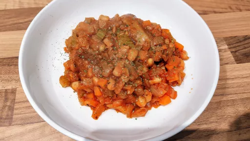

Cheat's sausage cassoulet

Step-by-step method for making Cheat's sausage cassoulet yourself.
Servings: 3
Total: 35 mins
Ingredients
- 1 tsp olive oil
- 1x 400 g pack Toulouse-inspired sausages
- 1 onion, finely chopped
- 1 large carrot, finely diced
- 1 stick celery, finely diced
- 2 cloves garlic, finely chopped
- 1x 400 g tin cannellini beans, drained and rinsed
- 3 tbsp sundried tomato paste
- 1 bay leaf
- 250 ml hot chicken stock
- handful of flat-leaf parsley, roughly chopped
Instructions
- Heat the oil in a nonstick deep saute or frying pan until hot. Add the
sausages1x 400 g pack
and fry over a medium heat for 10 minutes, turning occasionally, until golden. Remove to a plate.
- Add the
onion1
, carrot1 large
, celery1 stick
and garlic2 cloves
to the pan; cover with a lid and cook gently for 10 minutes. Take a spoonful of the cannellini beans1x 400 g tin
and, using a fork, mash with the tomato paste3 tbsp
to a rough paste.
- After the 10 minutes, add the bean and
tomato paste3 tbsp
. Return the sausages1x 400 g pack
to the pan, with the bay leaf1
and the rest of the beans. Add the stock250 ml
; season.
- Bring to the boil, reduce the heat and simmer, uncovered, for 10 minutes until reduced and the
sausages1x 400 g pack
are cooked through. Season to taste. Finish with parsley; serve with crusty bread.
-
kcal
497
-
fat
30.0 g
-
saturates
11.0 g
-
carbs
24.0 g
-
sugar
8.0 g
-
fibre
10.0 g
-
protein
28.0 g
-
salt
2.4 g
www.sainsburysmagazine.co.uk
Short Link
Long Link

 Dairy Free
Dairy Free